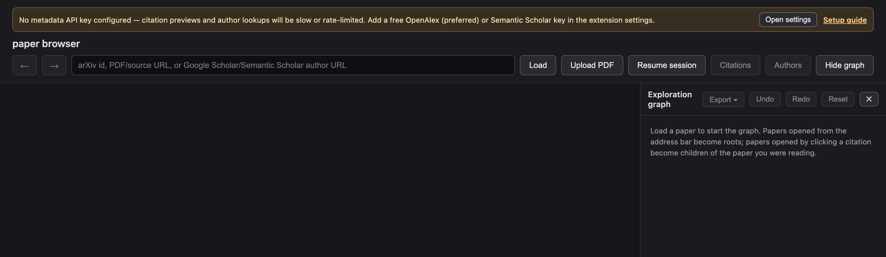
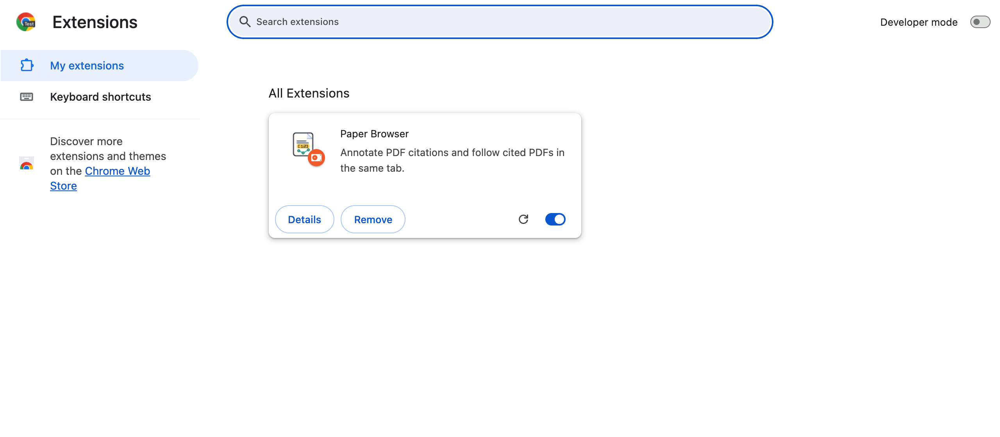
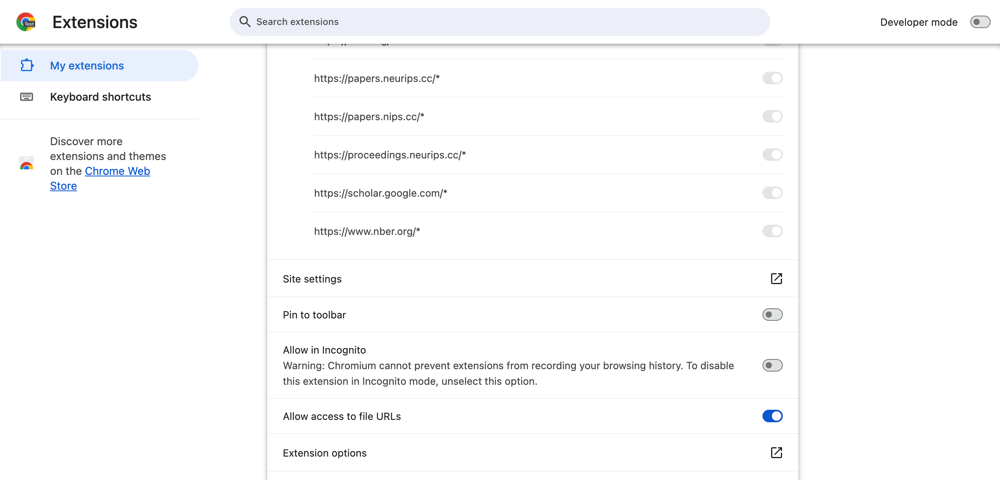
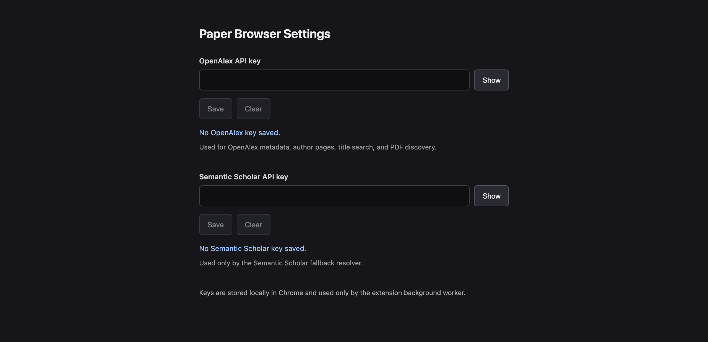

Setup guide
Add your API key
Paper Browser needs a free API key — preferably from OpenAlex — to look up citation metadata quickly and reliably. Setup takes about two minutes.
Why a key is needed
Every citation preview, author page, and PDF lookup queries scholarly metadata services. Without your own key, requests share an anonymous public pool that is heavily rate-limited — lookups become slow or fail outright once the shared quota runs out. A free personal key gives you your own daily allowance, which is more than enough for normal reading.
Until a key is saved, the extension shows this warning at the top of the viewer:

Step 1 — Get a free key
OpenAlex (preferred). Paper Browser uses OpenAlex for citation metadata, author pages, title search, and open-access PDF discovery. Create a free OpenAlex account (it takes under a minute), then copy your key from Settings → API key. The free key includes a daily usage allowance that comfortably covers everyday use — see the OpenAlex authentication guide.
Semantic Scholar (optional). Semantic Scholar is used only as a fallback resolver when the primary services can’t identify a reference. If you want that fallback to have its own quota too, request a free key via the Semantic Scholar API page. An OpenAlex key alone is enough for most people.
Step 2 — Open the extension’s options page
In Chrome, open the ⋮ menu → Extensions → Manage Extensions (or type
chrome://extensions in the address bar). Find the Paper Browser card and
click Details.

On the details page, scroll down and click Extension options.

Shortcut: you can also right-click the Paper Browser icon in the toolbar (or in the puzzle-piece extensions menu) and choose Options.
Step 3 — Paste your key and save
Paste the key into the OpenAlex API key field (and/or the Semantic Scholar field) and click Save. The status line under the field confirms the key is stored.

Keys are stored locally in your browser and are only attached to requests the extension makes to the corresponding service (OpenAlex or Semantic Scholar). They are never sent to a Paper Browser server — there isn’t one. See the Privacy Policy.
That’s it. Return to the viewer tab — the warning banner is gone, and citation previews now resolve with your own quota. Next: learn the browsing features.